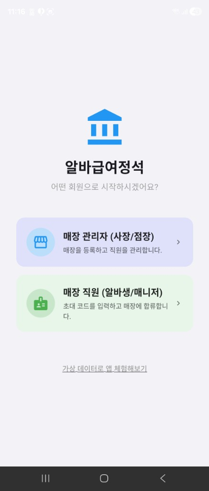
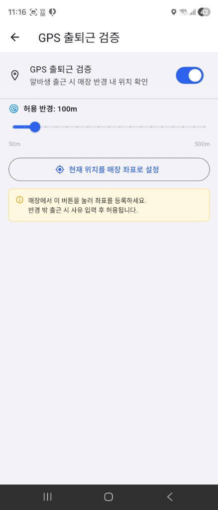

알바급여정석 사용자 가이드
사장님과 알바생이 앱 하나로 완벽하게 소통하는 스마트 급여정산/노무관리 솔루션. 핵심 기능인 앱 분기 시스템과 GPS 출퇴근 기능을 포함한 매뉴얼입니다.
제1부. 앱 역할 분기 및 필수 세팅
1. 새로운 통합 앱: 역할 선택 및 로그인
기존에 분리되어 있던 웹/앱 환경이 하나로 통합되었습니다. 처음 앱을 실행하시면 사장님으로 시작할지, 알바생(매니저)으로 시작할지 선택하게 됩니다.

초기 역할 선택 화면
- 매장 관리자 (사장/점장): 매장을 새롭게 등록하거나, 기존 계정으로 로그인하여 직원을 관리하는 메뉴입니다. 소셜 로그인(구글/애플)으로 3초 만에 시작할 수 있습니다.
- 매장 직원 (알바생/매니저): 사장님으로부터 받은 [초대 코드]를 입력하여 해당 매장에 즉시 합류하는 메뉴입니다!
2. 사장님: GPS 출근 검증 설정 (신규)
이제 직원들이 매장 밖에서 부정 출근(허위 출근 처리)을 하는 것을 방지하기 위해 GPS 매장 위치 인증 기능을 도입했습니다. 사장님 앱의 설정 메뉴에서 활성화하실 수 있습니다.

GPS 출근 검증 설정 화면
🔹 GPS 좌표 등록 및 반경 설정
- 현재 위치를 매장 좌표로 설정: 사장님께서 실제 매장에 계실 때 이 버튼을 눌러 정확한 GPS 좌표를 등록해 주세요.
- 허용 반경 조정 (50m ~ 500m): 직원들이 출근 버튼을 누를 수 있는 GPS 반경을 설정할 수 있습니다. 너무 좁게 설정하면 GPS 오차시 문제가 될 수 있으니 보통 100m를 권장합니다.
- 강력한 부정 방지: 직원이 설정된 반경 밖에서 출근을 시도할 경우, 차단되거나 '사유 입력' 후 예외 처리가 사장님 대시보드로 실시간 알림 전송됩니다.
3. 매장 직원: 초대코드를 통한 로그인 및 합류 방식
알바생이 앱을 설치한 뒤, 사장님의 매장에 합류하기 위한 로그인 절차입니다. 복잡한 회원 가입이 필요 없습니다.
- 1단계 (초대 코드 수령): 사장님이 앱에서 직원을 먼저 등록한 후, '카카오톡 혹은 문자'로 발송한 초대 메시지를 확인합니다. 메시지에는 [매장 초대코드]가 포함되어 있습니다.
- 2단계 (앱에서 직원용 선택): 앱 첫 화면에서 [매장 직원 (알바생/매니저)] 영역을 터치합니다.
- 3단계 (초대코드 입력): 복잡한 본인 인증이나 소셜 로그인 없이, 매장에서 발급받은 [초대 코드]와 본인의 [전화번호]만 입력하면 즉시 로그인이 완료됩니다.
- 합류 완료!: 코드를 입력하는 즉시, 사장님 매장과 연동되어 본인의 스케줄을 확인하고, 앞서 설정된 GPS 기반 출퇴근 버튼을 누를 수 있게 됩니다!
제2부. 사장님 핵심 기능 모아보기
4. 사업장 정보 및 직원 등록 설정
사장님 모드 진입 후 가장 먼저 해야 할 일은 매장 정보와 직원의 시급, 요일, 일하는 시간을 세팅하는 것입니다.

사업장/상시근로자수 설정

직원 근무요일/시간 지정
- 상시 근로자 수: 앱에 등록된 일정을 바탕으로 자동 5인 이상/미만을 판단하며, 이는 연장/야간 수당 계산에 결정적입니다.
- 주휴수당 자동 판독: 1주 15시간 이상 근무 시 주휴수당 달성 요건이 자동으로 표시됩니다.
- 고급 설정 (4대보험/보건증): 사회보험 공제 항목 설정 및 보건증 만료일 사전 경고 알림도 지원합니다.
5. 필수 노무 서류 자동화 교부 (근로계약서 등)
직원 정보를 입력하면, 스마트폰 화면에서 즉각적으로 법정 서류가 완성되어 직원에게 '전자 교부' 됩니다. 수기 작성이 필요 없습니다.

디지털 표준 근로계약서

야간/휴일근로 사전 동의서
직원의 비대면 전자 서명 연동
사장님이 서류를 매칭하면, 직원(알바앱)의 화면에 서명 요청 팝업이 뜹니다. 직원이 스마트폰으로 터치 사인을 하면 즉시 교부 완료 및 보관함 영구 저장이 진행됩니다!
6. 대시보드 실시간 상황판 및 급여 리포트

실시간 직원 근무상태 현황판

수당 및 원천징수 자동계산
- 직원들이 GPS 기반으로 출결 처리한 내용이 대시보드 타이머로 실시간 중계됩니다.
- 기록된 실 근무시간을 바탕으로 **주휴수당, 야간가산수당, 프리랜서(3.3%) 혹은 4대보험 원천징수세**가 소수점까지 오차 없이 자동 산출됩니다.
제3부. 직원/알바 전용 사용 가이드
7. GPS 실시간 출퇴근 등록 (알바생)
매장에 도착한 알바생이 앱을 켜면 보이는 주요 대시보드입니다.

알바 전용 대시보드 화면
- 출근하기 버튼 (GPS 검증): 매장 반경(예: 100m) 안에 들어와서 출근 버튼을 누르면 즉시 출근이 기록됩니다. (기존 카메라 QR 스캔 방식과 병행)
- 지각 주의: 반경 밖에서 누르거나 지각할 경우 사장님 대시보드상 패널티 기록이 남을 수 있습니다.
8. 스케줄, 예상 급여명세, 노무서류 보관함 보기

나의 캘린더 일정

세금 및 공제내역 투명 조회

전자서류 영구보관함
- 내 스케줄 간편 조회: 앞으로 내가 출근해야 할 요일과 일정이 캘린더에 표시됩니다. (앱에서 대타 알림 등 확장 가능)
- 급여 상세 내역: 사장님이 계산하는 100% 동일한 기준으로, 나의 주휴수당 발생 여부와 4대보험 공제액이 투명하게 공유되어 오해를 낳지 않습니다.
- 내 문서고(Vault): 입사 시 서명했던 근로계약서를 분실 걱정 없이 언제든 꺼내볼 수 있습니다.